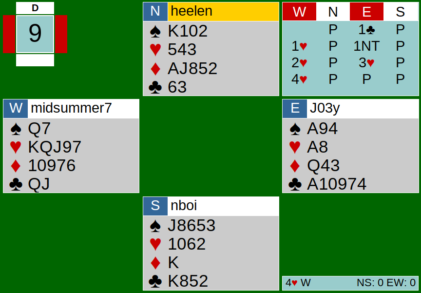

Welcome back to another hand analysis! Today, we will be thoroughly analyzing Board 9’s bidding from my table on June 23rd’s CK team game.

NS respectively passes during the whole auction, as they merely hold 15 HCP combined. East begins the auction with a 1C opening. West responds with 1H, showing 4+ hearts. Opener then bids 1NT, showing 12-14 HCP with a balanced hand and no four card support, and West rebids his heart suit, now showing one more heart. A more advanced way to show East’s hand in this position is through a system called New Minor Forcing.
Like most bridge systems, there are multiple ways players can play it. There are two variations to New Minor Forcing: one-way and two-way. We are focusing on New Minor Forcing one-way today. NMF can only occur in this specific bidding sequence: a minor opening (1C or 1D), followed up with a one major response (1H or 1S), a 1NT or 2NT rebid by the opener, and the responder bids the unbid minor. Responder’s second bid is NMF. To better visualize the bidding sequence, here are a few ways the auction can go:
1C-P-1H-P-1NT-2D
1D-P-1S-P-1NT-2C
1D-P-1S-P-2NT-3C
1C-P-1H-P-2NT-3D
In these situations, the last bid in the sequence is the New Minor Forcing bid. The bid shows five cards in the major that was bid in the previous round, and it looks for 3 card support from the opener. Some people play this as game forcing (must bid to game) and others play it as showing invitational values (10+ points) and forcing for one round. Either way, it is a forcing bid, hence the word “forcing” in its name. New Minor Forcing (one-way) has to be an agreement between partners, so the opener has to alert the bid when it occurs.
On Board 9, West could have bid New Minor Forcing instead of rebidding hearts. The NMF bid here would be 2D because diamonds is the unbid minor suit (East opened 1C). If West had bid 2D, it would show 5 hearts (because West previously bid 1H) and at least invitational values, which West has. East would alert West’s 2D bid as NMF and probably bid 2NT, denying 3 card heart support, even though hearts turn out to be the best contract for them.
Back to reality: East bids 3H after West’s 2H rebid, possibly thinking West has 6 hearts. EW eventually makes their way to game. It played out fairly well; NS’s heart split 3-3, EW’s clubs were set up, contract making.
If you want to learn more about New Minor Forcing, read Larry Cohen’s article here: https://www.larryco.com/bridge-articles/new-minor-checkback
Here is the link to the 6/23 hands: https://webutil.bridgebase.com/v2/tview.php?t=4867-1592964079&u=heelen&v3b=web&v3v=5.6.4